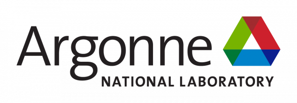

|
I am a Ph.D. candidate at the University of Illinois, Chicago , working under the supervision of Dr. Ian A. Kash . My work is broadly focused on sequential decision making and explainable AI. Currently, I am visiting researcher at IIT, Chicago under Dr. Ren Wang . I received B.E.(Hons.) in Electrical and Electronics and M.E (Hons.) in Software Systems from Birla Institute of Technology and Science, Pilani. I was also a research fellow at School of Information systems, Singapore Management University where I worked on speech recognition, processing and summarizations for dialog systems.
NEWS: |
{kind=link}
|
(*indicates equal contribution) Much of my research is on concerns with how AI models can be more rational, explainable and better at sequential decision making. Currently, I am using reinforcement learning for interpretable ML and conversational AI models. I am also interested in generative models, speech regonition and graph neural networks. |
|
Game-theoretic Counterfactual Explanation for Graph Neural Networks C Chhablani*, S Jain*, I Kash and S Medya WWW 2024 (Oral Presentation) |
|
Digits Micromodel for accurate and secure transactions
C Chhablani, V Gurbani, J Hosier and N Sharma AAAI 2024 (Workshop) |
|
An Analysis of Connections Between Regret Minimization and Actor Critic Methods in Cooperative Settings
C Chhablani, I Kash AAMAS 2023 |
|
Multiplicative Weight Updates for Extensive Form Games
C Chhablani, M Sullins, I Kash AAMAS 2023 (Oral Presentation) |
|
Counterfactual Multiagent Policy Gradients and Regret Minimization in Cooperative Settings (long invited talk)
C Chhablani, I Kash AAAI 2021 (workshop) |
|
|
|
Vail Systems
PhD intern (Speech Recognition and Language Models for Banking applications) |
|
|  |
Argonne National Labs
PhD intern (Deep Learning models for HPC systems) |

|
Zell Payments, Early Warning Services
ML intern (Key phrase extraction and Opinion Mining) |
|
School of Information Systems, Singapore Management University
Research Fellow (Speech Processing and Text Summarization) |
|

|
CEERI, India
Research Assistant (Object Detection for Panaroma images) |
|
CS 411: Aritificial Intelligence I, UIC CS 362: Computer Design, UIC CS 251: Data Structures, UIC CS 109/110: Matlab Programming, UIC |
|
Recipient of GSC Travel Award ($1500), UIC Recipient of Merit Scholarship (25% Fee Waiver), BITS Pilani Ranked 5663/400k+, 2916/1.2m+, 211/135k+ in national entrance exams IIT-JEE, AIEEE, BITSAT |
|
2020 | Google Deepmind Reinforcement learning for games 2021 | Argonne Seminar Series 2022 | Berkeley Seminar Series |
|
Reviewer: AAAI'23, AAAI'21, ICLR'22, ICLR'21, AAMAS'23,AAMAS'22 Volunteer: AAAI 2021, AAMAS 2023 |
|
Template taken from Jon Barron's website. |